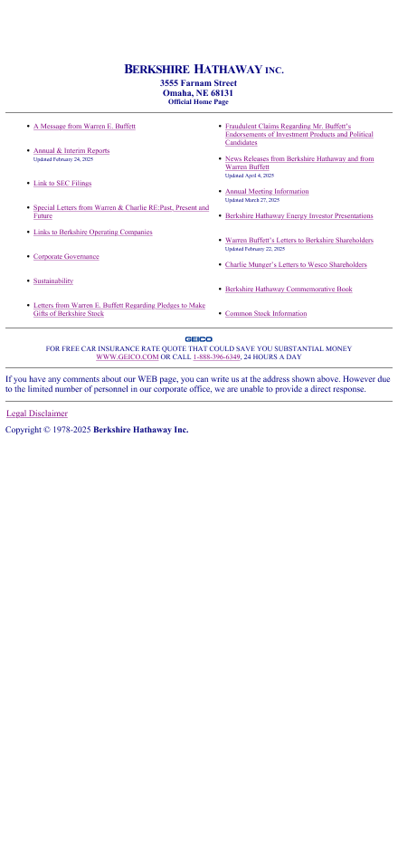
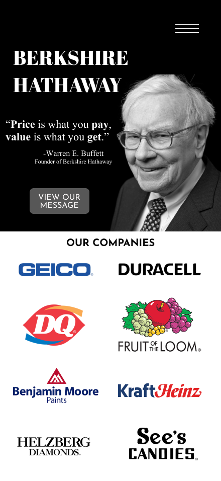

Berkshire Hathaway Redesign
A visual redesign concept for one of the most recognizable — and notoriously outdated — corporate websites in the world, built in Figma.

The Original
Berkshire Hathaway's actual website looks virtually unchanged since the early 2000s — plain text, a two-column link list, no images, no visual hierarchy, and a GEICO ad at the bottom. It's famously barebones for a company that manages hundreds of billions in assets and owns some of the most recognizable consumer brands in the world.
The redesign challenge was to bring the site into the present while keeping the no-nonsense, trust-first tone that defines the Berkshire brand. The goal wasn't to make it flashy — it was to make it look like it belonged to a company of this scale.
The Redesign
The redesign opens with a full-bleed hero featuring Warren Buffett's photo in black and white — one of his most well-known quotes set in bold type alongside it. The dark background immediately signals gravitas without resorting to corporate clichés.
Below the hero, a subsidiary grid displays Berkshire's portfolio of companies using each brand's own logo — GEICO, Duracell, Dairy Queen, Fruit of the Loom, Benjamin Moore, Kraft Heinz, and more. The logos do the work that paragraphs of text never could: they communicate the breadth and familiarity of the Berkshire portfolio at a glance.
The redesign is a surface-level visual rework — images and text layered in Figma to establish a direction — rather than a fully built interactive prototype.
View in Figma →